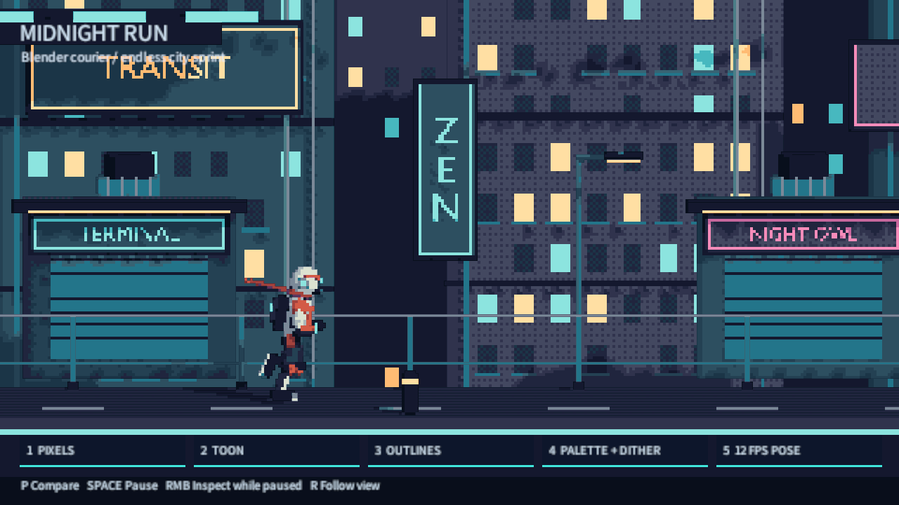
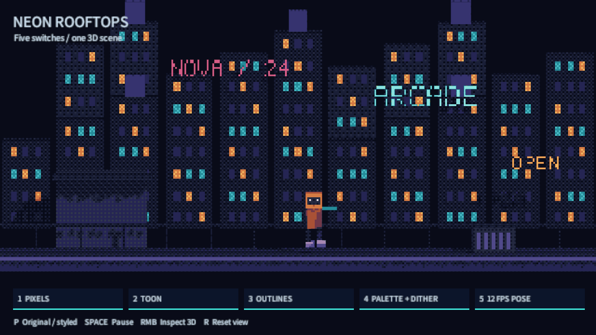
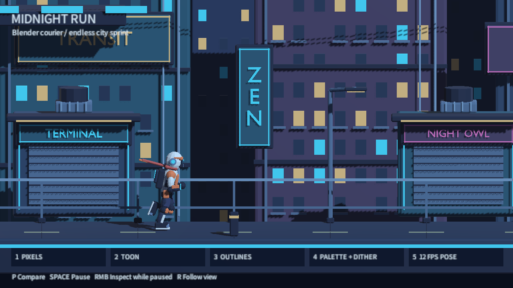

Tracefolio REPORTS & ISSUES
Tracefolio REPORTS & ISSUESMidnight Run — Blender 러너·네온 도시·연속 횡스크롤 재제작
완료단순 큐브 예제를 Blender 리깅 러너와3층 네온 도시로 교체하고 기존 Pixora Studio1.0.1 초안·9언어 소개 글을 갱신했습니다.
작업 결과
실제 Blender 원본2개와 FBX4개를 저장·재열기했습니다. 18본 가중치 러너가7.5m/s로 전진하며3개 도시 레이어를 순환합니다. 실제 Unity25.1초 플레이에서188.4m 이동·302회 자세 변화를 확인했습니다. 실행 영상—12초, 무음 실행 증거
편집 가능한 원본2개와 재생성 스크립트는 프로젝트 ArtSources/Pixora/Blender/NeonSprint에 보관했습니다. 공개 첨부는 실제 실행 화면·로그로 제한합니다.
다중 재질 전환의 전체 메서드
public void ApplySwitches()
{
PixelCameraPreset settings = _working != null ? _working : preset;
effect.enabled = switches[0] || switches[2] || switches[3];
for (int i = 0; i < pixelObjects.Length; i++)
{
pixelObjects[i].pixelSize = switches[0] ? 4 : 1;
}
settings.outline = switches[2];
settings.palette = switches[3] ? palette : null;
settings.orderedDithering = switches[3];
steppedAnimator.enabled = switches[4];
for (int i = 0; i < surfaces.Length; i++)
{
surfaces[i].sharedMaterial = switches[1] ? toonMaterials[i] : smoothMaterials[i];
}
if (materialSets != null)
{
foreach (var set in materialSets)
{
if (set.renderer != null)
{
set.renderer.sharedMaterials = switches[1] ? set.toon : set.smooth;
}
}
}
for (int i = 0; i < enabledIndicators.Length; i++)
{
enabledIndicators[i].SetActive(switches[i % 5]);
}
}
flowchart TD A[ApplySwitches] --> B[격자와 팔레트·외곽선·포즈 토글] B --> C[기존 단일 재질 배열 전환] C --> D[Renderer별 전체 재질 슬롯 전환] D --> E[표시기 갱신]
변경 내용
적용 내용

기존 장면 경로·GUID와 예제 메뉴를 유지했습니다. 기존 세 예제는 보존하고 폐기한 네온 큐브 재질은 제거했습니다. 아래는 질주·카메라·시차 순환을 담당하는 전체 컴포넌트입니다.
using UnityEngine;
namespace TurnRoom.PixelCamera.Samples
{
/// <summary>
/// 연속 질주와 추적 카메라·깊이별 도시 순환을 담당한다.
/// </summary>
public sealed class NeonSprintLoop : MonoBehaviour
{
[System.Serializable]
public struct CityLayer
{
public Transform[] chunks;
[Range(.05f, 1.2f)] public float parallax;
public float length;
}
public FiveSwitchShowcase showcase;
public Transform runner;
public Camera followCamera;
public float speed = 7.5f;
public float lead = 2.8f;
public CityLayer[] layers;
private Vector3 _cameraHome;
private Quaternion _cameraRotation;
private float[][] _origins;
private float _distance;
public float Distance => _distance;
private void Awake()
{
_cameraHome = followCamera.transform.position;
_cameraRotation = followCamera.transform.rotation;
_origins = new float[layers.Length][];
for (int i = 0; i < layers.Length; i++)
{
_origins[i] = new float[layers[i].chunks.Length];
for (int j = 0; j < layers[i].chunks.Length; j++)
{
_origins[i][j] = layers[i].chunks[j].position.x;
}
}
}
private void Update()
{
if (Input.GetKeyDown(KeyCode.R))
{
ResetView();
}
if (showcase.IsPaused)
{
return;
}
float delta = Mathf.Max(0, Time.deltaTime);
_distance += speed * delta;
runner.position += Vector3.right * speed * delta;
UpdateLayers();
}
private void LateUpdate()
{
if (showcase.IsPaused)
{
return;
}
ResetView();
}
/// <summary>
/// 실제 캐릭터 이동과 독립된 거리로 각 깊이의 모듈을 화면 밖에서 재배치한다.
/// </summary>
private void UpdateLayers()
{
for (int i = 0; i < layers.Length; i++)
{
CityLayer layer = layers[i];
if (layer.chunks == null || layer.chunks.Length < 2 || layer.length <= 0)
{
continue;
}
float travel = _distance * layer.parallax;
float span = layer.length * layer.chunks.Length;
for (int j = 0; j < layer.chunks.Length; j++)
{
while (travel - _origins[i][j] > layer.length * .5f + 22)
{
_origins[i][j] += span;
}
Vector3 position = layer.chunks[j].position;
position.x = _origins[i][j] + _distance * (1 - layer.parallax);
layer.chunks[j].position = position;
}
}
}
/// <summary>
/// 전진 중인 캐릭터보다 앞을 보여 주는 횡스크롤 시점을 복원한다.
/// </summary>
public void ResetView()
{
followCamera.transform.SetPositionAndRotation(
new Vector3(runner.position.x + lead, _cameraHome.y, _cameraHome.z),
_cameraRotation);
}
}
}
flowchart TD
A[Update] --> B{일시정지?}
B -->|아니오| C[거리와 러너 +X 전진]
C --> D[LateUpdate 추적 시점 복원]
B -->|예| E[이동 중지·3D 관찰 유지]
flowchart TD
A[누적 거리 × 시차] --> B[각 레이어와 청크 확인]
B --> C{뒤쪽 한계 통과?}
C -->|예| D[원점에 전체 구간 길이 더하기]
D --> C
C -->|아니오| E[원점과 시차 보정으로 위치 적용]
검증
실제 전후 화면


- Blender5.2.3 LTS 최종 원본 재열기: 러너18본·가중 메시1·Action1, 도시27메시. 디스크 해시 보존. 근거
- 추가17초 실제 실행:91,098회 전진·역방향0회. 모든 레이어가 카메라 기준 뒤로 이동하고 중경·데크가 재순환했습니다. 상대 이동 기록
- Unity6000.0.83f1 / Built-in DX11 / Linear.25.1초·188.4m·302자세 변화와6개 청크 재배치. 실행 값 -12초1280×720 /24FPS:288프레임 전체 인코드·디코드. 음향 없는 실행 증거이며 판매용 홍보 영상으로 판정하지 않았습니다. 근거
- 공식 validator25 Pass·4 Warning·0 Fail, 컴파일 오류 없음. 경고: Compressed Files / Mesh Prefabs / Model Orientation / JPG. 전체 결과
- 패키지2,885파일·80,681,626바이트. SHA256 79db0667e010e18a4e188195b1fbdaaaf22c78c1be01ef6cfd25ea0c801658ea. Stage asset/meta 차이0. 사용자 수정 중인 공용 WindowMouseActivationGuard는 검증된HEAD본을 패키지에 사용하고 작업 파일을 보존했습니다. 대조
- 새 프로젝트 실제 ImportPackage: 누락 스크립트0·질주 제어기1·스킨 메시1·core→sample 의존 없음. 첫 확인은 비동기 가져오기보다 빨라 실패했으며 완료 이벤트·도메인 재로드 후 확인으로 수정하여 통과했습니다. 새 설치
- 초안1547466 /1.0.1: 업로드 후80,681,626바이트·draft 재조회. 기존1541558 /1.0.0 pendingReview 유지. 서버 재조회
- main f648f790384f7f0d84b209b57be18c923f05ce95; 소개 사이트9언어 본문·같은 버전 URL·새 썸네일 공개 확인. 공개 재읽기 -9언어 문서·실제 캡처·ScreenshotManifest 갱신. 문서 경로 검사 통과.
- 컴퓨터 유즈·마우스·키보드·포커스 조작 없음. Unity 성공 배치 모두 ownForegroundObserved=false. 격리 라이선스 연결 실패는 실제 환경의 배치 실행으로 해결했습니다.
남은 사항
Native 입력 조작, 모든9언어 화면 배치, 이 예제의URP·HDRP·XR·타 플랫폼은 미확인입니다. 공식4개 경고는 보존했으며 심사 승인·제출을 의미하지 않습니다. 최종 심사 제출은 하지 않았습니다. 기존 사용자 수정 파일과 다른 Unity 작업을 보존했습니다.
대화 기록
사용자는 기존 예제가 성의 없다고 지적하며 “블랜더로 모델 만들고 … 다 다시 만들어서 횡스크롤로 질주하는 씬”을 요구했습니다. 이어 “컴퓨터 유즈 안 쓰고 … 나 써야해”라고 제약했고, 왕복하지 않고 앞으로 계속 달리며 배경이 스크롤돼야 한다고 다시 명시했습니다. 원본 모델·리깅·도시를 재제작하고 배치/API 경로를 유지했습니다.
지침 환류
검증한 교훈을 PixoraAuthoring 및 Pixel Camera 프로젝트 지침에 통합했습니다: 단순 큐브 대체 금지, 실제 Blender 원본 보존, 한 방향 질주와 구간 순환을 실행 값으로 확인. 기존 전역 비간섭 원칙은 중복 추가하지 않았습니다.
공개 흐름도 재검증
실제 headless Chrome에서 개별 mermaid.run 호출의 SVG ID가 겹쳐 세 번째 그래프가 비는 현상을 관찰했습니다. Mermaid12.3 공식 문서의 명시적인 고유 ID를 사용하는 render 호출로 수정했습니다. 이 변경은 보고서 렌더러이며 제품 패키지는 바뀌지 않습니다. 아래는 수정한 전체 메서드입니다.
async function renderDiagrams(){
const theme=root.dataset.theme;
if(theme===renderedTheme)return;
renderedTheme=theme;
const style=getComputedStyle(diagrams[0]);
const color=name=>style.getPropertyValue(name).trim();
mermaid.initialize({
startOnLoad:false,
securityLevel:'strict',
htmlLabels:false,
suppressErrorRendering:true,
theme:'base',
look:'classic',
fontFamily:'Segoe UI, Malgun Gothic, system-ui, sans-serif',
themeCSS:'.node rect { rx: 6px; }',
themeVariables:{
darkMode:theme==='dark',
fontSize:'14px',
background:color('--paper'),
primaryColor:color('--diagram-node'),
primaryBorderColor:color('--diagram-border'),
primaryTextColor:color('--ink'),
lineColor:color('--green'),
edgeLabelBackground:color('--paper')
},
flowchart:{curve:'linear',nodeSpacing:28,rankSpacing:30,padding:10,wrappingWidth:115}
});
for(const [index,diagram] of diagrams.entries()){
const scrollLeft=diagram.scrollLeft;
const source=sources[index];
diagram.textContent=source;
diagram.removeAttribute('data-processed');
try{
const id=`tracefolio-diagram-${index}-${theme}`;
const {svg:markup,bindFunctions}=await mermaid.render(id,source);
diagram.innerHTML=markup;
bindFunctions?.(diagram);
const svg=diagram.querySelector('svg');
if(svg)svg.style.minWidth=`${svg.viewBox.baseVal.width}px`;
diagram.scrollLeft=scrollLeft;
}catch{
diagram.textContent=source;
}
}
}
flowchart TD A[원본과 스크롤 위치 보관] --> B[모든 다이어그램 초기화] B --> C[고유 ID로 각 다이어그램 렌더] C --> D[각 SVG 폭과 스크롤 복원] C -->|실패| E[미렌더 원본 유지]
작업 시간
- 제안 시간: 60~90분
- 실제로 완료된 시간: 시작2026-11-16 16:15:41 KST. 구현·배치 실행·새 설치·초안 업로드·main 푸시·소개 사이트 공개 확인까지 약71분, 2026-11-16 17:26:53 KST. 이 보고서 자체의 배포·공개 확인은 후속으로 수행합니다.
- XERJ: 미사용 — 사용자 지시에 따라 rg·직접 소스·실제 Blender와 Unity 배치 로그를 사용했습니다.